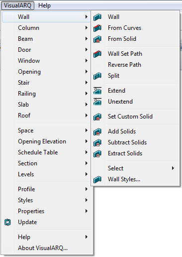

Most of the application commands are organized in the VisualARQ drop-down menu. All VisualARQ objects and tools found in the toolbars are displayed with their corresponding options.

VisualARQ drop-down menu.
NOTE: The drop-down menu should appear when VisualARQ is loaded in the current Rhino session after installing VisualARQ. If it does not appear, VisualARQ might be using an old "visualarq.tb" file (in Rhino 4.0) or "visualarq.rui" file (in Rhino 5). In that case, you need to delete this file manually, uninstall VisualARQ and reinstall it. The "visualarq.tb" / "visualarq.rui" files are located in the following directories: